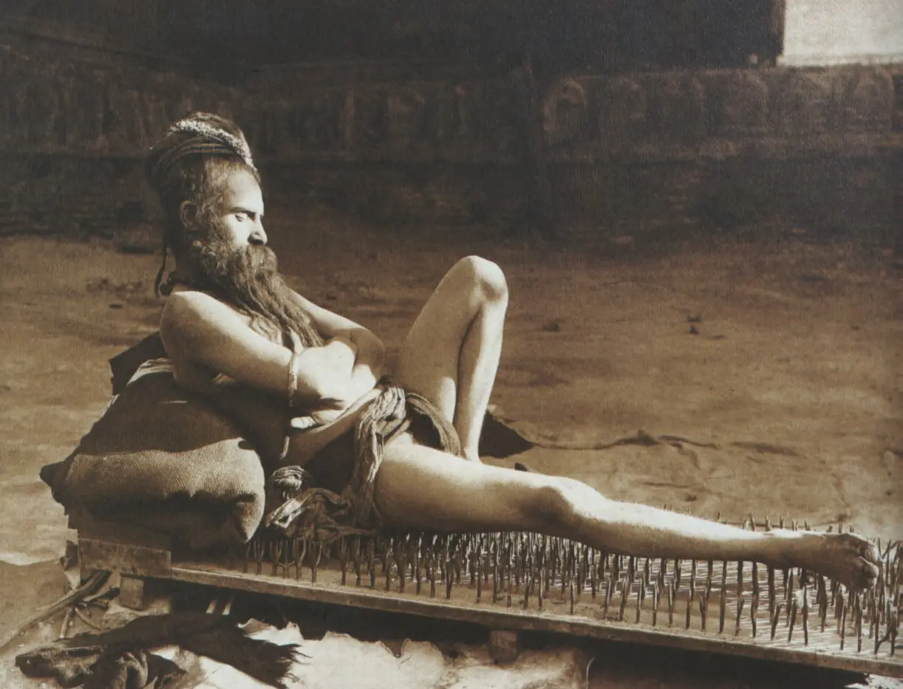

我发现世界范围内所有人都很喜欢把苦劳当功劳，认为只要付出就有收获，把自己搞得越累、越痛苦，就能得到越多成果。这不是一种理性的行为，更接近宗教式的「献祭」。

身边曾经有个朋友抱怨：「我为了备考，每天只睡5个小时，头发都快掉光了，结果却还是没考上。」
注意到了吗？他把自己的痛苦视作「考上」的前提条件，认为自己痛苦了就理应考上。这二者是没有因果关系的。事实上，考不考得上取决于考生的知识量和技巧，这依赖科学的备考而非痛苦的备考。
这种把苦劳当功劳的行为可能起源于宗教或者中学教育，在中国大概是后者居多。
在中学教育阶段，很多教师和家长（还包括课本中的一些内容）在明示或暗示「艰苦奋斗」「不畏牺牲」的重要性，比如 头悬梁锥刺股 的典故，还有 张桂梅 的案例。教师往往表扬那些带病上学的学生，且有时批评「投机取巧」的行为。
这就在学生的心中留下了自我牺牲可以获得积极反馈的印象，进而可能演变成「把苦劳当功劳」的思维方式。
因为这不用动脑筋，能吃身体的苦，吃不了思考的苦，大多数人都这样。
个人猜测可能东亚、南亚的农耕文化比北欧的渔猎文化更喜欢推崇苦行，因为农业需要劳动者能忍受极长的回报周期，与苦行相似。但这只是未经调研的猜测。